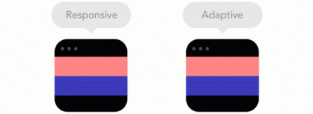
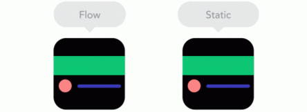
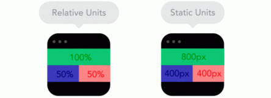
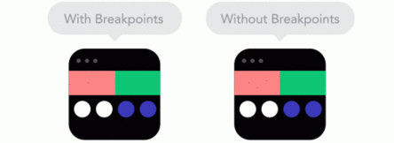
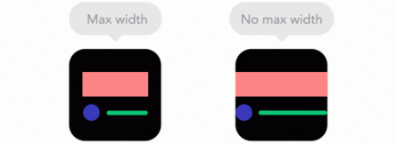
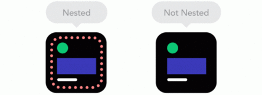
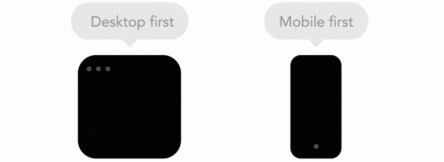
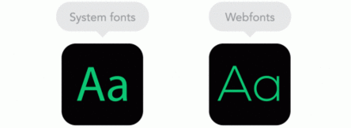

Эти два противоположных подхода могут отлично дополнять друг друга, если применять их осознанно. Разумеется, их конкретное применение должно определяться контентом:

По мере уменьшения размера экрана контент начинает занимать большую высоту экрана, и нижележащие элементы при этом могут отодвигаться все дальше от нижней границы области просмотра. Это называется «потоком». Вам необходимо освоиться с этой концепцией, чтобы научить ваш сайт правильно реагировать на изменение ширины экрана:

Сайт должен одинаково хорошо выглядеть не только на больших десктопных мониторах и на крошечных телефонах, но и на всём
многообразии устройств, находящихся по своим характеристикам где-то между этими крайностями.
Нужную гибкость нашему дизайну может
придать использование относительных единиц измерения. Например, если установить ширину элемента в 50%, можно быть уверенным, что
этот элемент займёт ровно половину экрана на любом устройстве:

Точки разрыва помогут изменить расположение элементов дизайна при соответствии экрана заданным условиям. Например, сайт может
иметь три колонки текста на экране десктопа и одну – на смартфоне. Обычно наличие и характеристики точек разрыва определяются контентом.
Если при определенном разрешении абзац текста начинает выглядеть странно или иллюстрация выходит за пределы экрана, необходимо задать
точку разрыва именно здесь. Но, задав слишком много точек разрыва, легко запутаться в них и в связанных с ними классах:

Использовать для отображения контента всю ширину экрана без остатка – отличная идея, если мы имеем дело с экраном смартфона. Но если использовать аналогичным образом широкий экран монитора, контент просто перестанет восприниматься. Здесь нам на помощь приходит CSS-атрибут ‘max-width’.

Имея на странице слишком много объектов с относительным позиционированием, сложно добиться их правильного расположения друг
относительно друга.
Но можно поместить группу элементов в блок-контейнер, и в дальнейшем управлять позицией и размером контейнера.
Этот приём также упрощает работу с элементами, имеющими абсолютные размеры, например, логотипами и кнопками:

Вы можете начать разработку с мобильного устройства, постепенно уточняя расположение элементов для более широких экранов. Или можете,
наоборот, начать с самого большого экрана и продвигаться в обратном направлении. Некоторые учитывают несколько разрешений экрана
одновременно.
Наиболее простым считается первый способ, и он получил широкое распространение среди дизайнеров под названием
“Mobile First”. Приступая к работе, прикиньте, какой из методов предпочтительнее для вас и для контента вашего сайта:

Хотите использовать на вашем сайте крутую типографику? Используйте встраиваемые шрифты. Но учтите, что каждая гарнитура, загружаемая из Сети, увеличивает время загрузки страницы. Шрифты, уже имеющиеся на устройстве клиента, загружаются мгновенно, зато их внешний вид и соответствие дизайнерскому замыслу может оставлять желать лучшего:

{{ message }}